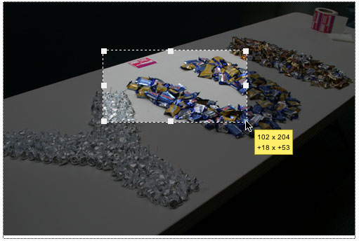

YUI 2: ImageCropper
YUI 2: ImageCropper
The ImageCropper Control gives you an interactive interface for getting the dimensions to crop an image.
On This Page:
Quick Links:
- Examples: Explore examples of the ImageCropper in action.
- API Documentation: View the full API documentation for the ImageCropper.
- Release Notes: Detailed change log for the ImageCropper.
- License: The YUI Library is issued under a BSD license.
- Download: Download the ImageCropper as part of the full YUI Library at YUILibrary.com.
Getting Started
To use the ImageCropper Control, include the following source files in your web page:
<!-- Skin CSS file --> <link rel="stylesheet" type="text/css" href="http://yui.yahooapis.com/2.9.0/build/assets/skins/sam/resize.css"> <link rel="stylesheet" type="text/css" href="http://yui.yahooapis.com/2.9.0/build/assets/skins/sam/imagecropper.css"> <!-- Utility Dependencies --> <script src="http://yui.yahooapis.com/2.9.0/build/yahoo-dom-event/yahoo-dom-event.js"></script> <script src="http://yui.yahooapis.com/2.9.0/build/dragdrop/dragdrop-min.js"></script> <script src="http://yui.yahooapis.com/2.9.0/build/element/element-min.js"></script> <!-- Source file for the Resize Utility --> <script src="http://yui.yahooapis.com/2.9.0/build/resize/resize-min.js"></script> <!-- Source file for the ImageCropper Control --> <script src="http://yui.yahooapis.com/2.9.0/build/imagecropper/imagecropper-min.js"></script>

YUI Dependency Configurator:
Instead of copying and pasting the filepaths above, try letting the YUI dependency Configurator determine the optimal file list for your desired components; the Configurator uses YUI Loader to write out the full HTML for including the precise files you need for your implementation.
Note: If you wish to include this component via the YUI Loader, its module name is imagecropper. (Click here for the full list of module names for YUI Loader.)
Where these files come from: The files included using the text above will be served from Yahoo! servers; see "Serving YUI Files from Yahoo!" for important information about this service. JavaScript files are minified, meaning that comments and white space have been removed to make them more efficient to download. To use the full, commented versions or the -debug versions of YUI JavaScript files, please download the library distribution and host the files on your own server.
Order matters: As is the case generally with JavaScript and CSS, order matters; these files should be included in the order specified above. If you include files in the wrong order, errors may result.
Setting up an ImageCropper
Setting up an ImageCropper Control is as easy as this:
<img src="yui.jpg" id="crop1">
var imgCrop = new YAHOO.widget.ImageCropper('crop1');
Using the above code will get you a rich control that looks something like this:
Configuring an ImageCropper
The ImageCropper Control is based on the Resize Utility and it inherits some of it's configuration options.
| Name | Type | Default | Description |
|---|---|---|---|
| initialXY | Array | [10, 10] | Array of the XY position that we need to set the crop element to when we build it. |
| keyTick | Number | 1 | The pixel tick for the arrow keys. |
| shiftKeyTick | Number | 10 | The pixel tick for shift + the arrow keys. |
| useKeys | Boolean | true | Should we use the Arrow keys to position the crop element. |
| status | Boolean | true | Show the Resize Utility status |
| minHeight | Number | 50 | MinHeight of the crop area |
| minWidth | Number | 50 | MinWidth of the crop area |
| ratio | Boolean | false | Set the ratio config option of the Resize Utlility |
| initHeight | Number | 1/4 of the image height | Set the initlal height of the crop area |
| initWidth | Number | 1/4 of the image width | Set the initlal width of the crop area |
ImageCropper Events
Here is a list of the Custom Events that the ImageCropper Control fires:
| Name | Payload | Description |
|---|---|---|
| dragEvent | MouseMove Event | When the DragDrop dragEvent is fired for the config option draggable. |
| startResizeEvent | Resize Object | When when a resize action is started. |
| beforeResize | Height, Width, Top, Left | Fires before every element resize after the size calculations, returning false will stop the resize. |
| resizeEvent | Height, Width, Top, Left | On every element resize (only fires once when used with proxy config setting). |
| moveEvent | Height, Width, Top, Left | Fires on every element move. Inside these methods: _handleKeyPress, _handleDragEvent, _handleResizeEvent |
Getting the crop area
Now that we have an interface, we need to get the crop data from the ImageCropper Control. We can do this with the getCropCoords method, like this:
//setup a new cropper var cropImg = new YAHOO.widget.ImageCropper('img1'); //get the crop area var cropArea = cropImg.getCropCoords(); // cropArea now looks like this: { top: 70, left: 122, height: 86, width: 172, image: 'yui.jpg' }
Now that we have the top, left, height & width of the crop reagion, here is some sample PHP code for cropping that image based on the data from the ImageCropper Control.
//We are using the ImageMagick convert utility //http://www.imagemagick.org/ $convert = '/usr/local/bin/convert'; //You should do your own security checks here $top = $_GET['top']; $left = $_GET['left']; $height = $_GET['height']; $width = $_GET['width']; $tmpFile = mktime().'-out.jpg'; //You should do your own security checks here copy('./yui.jpg', './tmp/'.$tmpFile); $outFile = 'cropped-'.mktime().'.jpg'; $comm = $convert.' tmp/'.$tmpFile.' -crop '.$width.'x'.$height.'+'.$left.'+'.$top.' tmp/'.$outFile; system($comm);
Take a look at the ImageCropper examples section for more details..
Skinning ImageCropper
The ImageCropper Control comes with a default presentation or "skin," part of the "Sam Skin" visual treatment that accompanies most YUI controls. You can read more about the general approach to skinning YUI components in this in-depth article.
The CSS provided with the ImageCropper Control is comprised of core, functional CSS as well as the Sam Skin visual treatment.
To explore the CSS which controls the ImageCropper's presentation, please review the ImageCropper's Skinning Example wherein the full CSS for the control is displayed.
Known Issues in 2.5.1
Currently the ImageCropper Control doesn't support scaled images. All images must be used at full scale.
YUI on Mobile: Using ImageCropper with "A-Grade" Mobile Browsers
About this Section: YUI generally works well with mobile browsers that are based on A-Grade browser foundations. For example, Nokia's N-series phones, including the N95, use a browser based on Webkit — the same foundation shared by Apple's Safari browser, which is found on the iPhone. The fundamental challenges in developing for this emerging class of full, A-Grade-derived browsers on handheld devices are:
- Screen size: You have a much smaller canvas;
- Input devices: Mobile devices generally do not have mouse input, and therefore are missing some or all mouse events (like mouseover);
- Processor power: Mobile devices have slower processors that can more easily be saturated by JavaScript and DOM interactions — and processor usage affects things like battery life in ways that don't have analogues in desktop browsers;
- Latency: Most mobile devices have a much higher latency on the network than do terrestrially networked PCs; this can make pages with many script, css or other types of external files load much more slowly.
There are other considerations, many of them device/browser specific (for example, current versions of the iPhone's Safari browser do not support Flash). The goal of these sections on YUI User's Guides is to provide you some preliminary insights about how specific components perform on this emerging class of mobile devices. Although we have not done exhaustive testing, and although these browsers are revving quickly and present a moving target, our goal is to provide some early, provisional advice to help you get started as you contemplate how your YUI-based application will render in the mobile world.
More Information:
- Challenges of Interface Design for Mobile Devices - YUI Blog article by Lucas Pettinati, Yahoo! Sr. Interaction Designer.
- Performance Research, Part 5: iPhone Cacheability - Making it Stick - YUI Blog article by Tenni Theurer and Wayne Shea from the Yahoo! Exceptional Performance Team
The YUI ImageCropper Control does not currently support the iPhone or the Nokia N95. Due to the interaction model (specifically, the inability to drag and drop), the ImageCropper Control will not function as expected.
Support & Community
The YUI Library and related topics are discussed on the on the YUILibrary.com forums.
Also be sure to check out YUIBlog for updates and articles about the YUI Library written by the library's developers.
Filing Bugs & Feature Requests
The YUI Library's public bug tracking and feature request repositories are located on the YUILibrary.com site. Before filing new feature requests or bug reports, please review our reporting guidelines.

ImageCropper Control Examples:
YUI ImageCropper on del.icio.us:
All YUI 2.x users should review the YUI 2.8.2 security bulletin, which discusses a vulnerability present in YUI 2.4.0-2.8.1.
- YUI Library
- YUI Home
- YUI 3
- YUIBlog
- Bug Reports/Feature Requests
- YUI on GitHub
- YUI License
- YUI 2.x Resources
- YUI 2 Archives
- YUI 2 Examples
- YUI 2 API Docs
- YUI 2 Discussion Forums

- YUI Components
- Animation
- AutoComplete
- Browser History Manager
- Button
- Calendar
- Carousel
- Charts
- Color Picker
- Connection Manager
- Container
- Cookie
- DataSource
- DataTable
- Dom
- Drag & Drop
- Element
- Event
- Get
- ImageCropper
- ImageLoader
- JSON
- Layout Manager
- Logger
- Menu
- Paginator
- Profiler
- ProfilerViewer
- ProgressBar
- Resize
- Rich Text Editor
- Selector
- Slider
- Storage
- StyleSheet
- SWF
- SWFStore
- TabView
- TreeView
- Uploader
- Yahoo Global Object
- YUI Loader
- YUI Test
- Reset CSS
- Base CSS
- Fonts CSS
- Grids CSS
Copyright © 2013 Yahoo! Inc. All rights reserved.